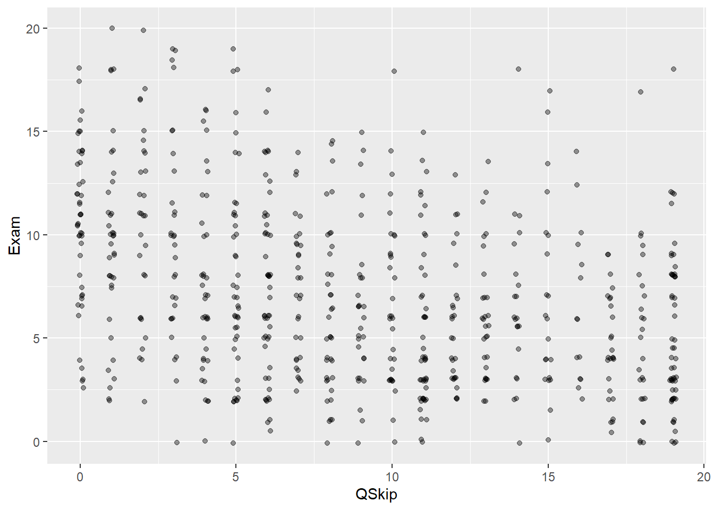

Code
#|message: false
here::i_am("r-101-grade-analysis.Rproj")
library(here)
library(vroom)
library(dplyr)
library(tidyr)
library(ggplot2)
library(stringr)#|message: false
here::i_am("r-101-grade-analysis.Rproj")
library(here)
library(vroom)
library(dplyr)
library(tidyr)
library(ggplot2)
library(stringr)#|message: false
grade <- vroom(here("grades.csv"))Loading the Data…
Q2 <- grade |> summarize("minimum" = min(Exam, na.rm=TRUE), "maxixmum" = max(Exam, na.rm=TRUE), "median" = median(Exam, na.rm=TRUE), "mean" = mean(Exam, na.rm=TRUE))
table2 <- knitr::kable(Q2)This table offers descriptive of the variable Exam
| minimum | maxixmum | median | mean |
|---|---|---|---|
| 0 | 20 | 6.5 | 7.148729 |
NoFinal <- grade |> filter(is.na(Exam)==TRUE)
NoFinalnb <- count(NoFinal)A total of 60 students did not take the final exam.
GradeB <- grade |> filter(!is.na(Exam))
ggplot(GradeB, aes(x = Exam))+
geom_bar()grouped_grade <- grade|> group_by(Group)
countpergroup <- count(grouped_grade)
table5<- knitr::kable(countpergroup)This table shows how many people can be found in each groups (here called grp)
| Group | n |
|---|---|
| grp_1 | 29 |
| grp_10 | 23 |
| grp_11 | 25 |
| grp_12 | 33 |
| grp_13 | 29 |
| grp_14 | 32 |
| grp_15 | 34 |
| grp_16 | 33 |
| grp_17 | 35 |
| grp_18 | 36 |
| grp_19 | 29 |
| grp_2 | 23 |
| grp_20 | 33 |
| grp_21 | 36 |
| grp_22 | 27 |
| grp_23 | 33 |
| grp_24 | 35 |
| grp_3 | 32 |
| grp_4 | 32 |
| grp_5 | 27 |
| grp_6 | 23 |
| grp_7 | 31 |
| grp_8 | 30 |
| grp_9 | 29 |
ggplot(grade, aes(x=Group))+
geom_bar()
Here is a graphical representation of the group’s number of members.
ggplot(GradeB, aes(x=Exam, fill=Group))+
geom_bar()This is visually pleasing. However, it seems rather uninformative :(
ggplot(GradeB, aes(x=Exam, fill=Group))+
geom_bar(position="fill")This makes the group comparable in relative terms. We however lose the absolute grade distribution in the process.
Q8 <- grade |> group_by(Group) |>
summarise(Missed_Fin = sum(is.na(Exam)))
table8<- knitr::kable(Q8)The number of students missing the final exam per group is as shown in this table.
| Group | Missed_Fin |
|---|---|
| grp_1 | 3 |
| grp_10 | 7 |
| grp_11 | 6 |
| grp_12 | 1 |
| grp_13 | 1 |
| grp_14 | 1 |
| grp_15 | 2 |
| grp_16 | 0 |
| grp_17 | 5 |
| grp_18 | 3 |
| grp_19 | 1 |
| grp_2 | 5 |
| grp_20 | 0 |
| grp_21 | 0 |
| grp_22 | 0 |
| grp_23 | 2 |
| grp_24 | 1 |
| grp_3 | 2 |
| grp_4 | 5 |
| grp_5 | 1 |
| grp_6 | 3 |
| grp_7 | 4 |
| grp_8 | 2 |
| grp_9 | 5 |
ggplot(Q8,aes(x= Group, y = Missed_Fin)) +
geom_col()+
xlab("Groups")+
ylab("Nb of skippers")This is a graphical representation of the previous question.
New_Grade <- grade |> pivot_longer(cols = -c(Id, Group),
names_to="Exam_form",
values_to ="Grade")Perform a pivot longer command on all variables excespt on Id and Group.
Q11 <- New_Grade |> group_by(Id) |>
summarise(Nb_skip = sum(is.na(Grade)))The resulting table is too long to be presented. It shows how many tests each student have missed. It is quite rare for a student not to miss any test.
ggplot(Q11, aes(x=Nb_skip)) +
geom_bar()This is the distribution of the number of missing grades per students.
Here we try to do get the same info as in Q8, namely the number of students, per group, who missed the Exam
Q13 <- New_Grade |> filter(Exam_form=="Exam") |> group_by(Group) |> summarise(Missed_tests = sum(is.na(Grade)))
table13 <- knitr:: kable(Q13)| Group | Missed_tests |
|---|---|
| grp_1 | 3 |
| grp_10 | 7 |
| grp_11 | 6 |
| grp_12 | 1 |
| grp_13 | 1 |
| grp_14 | 1 |
| grp_15 | 2 |
| grp_16 | 0 |
| grp_17 | 5 |
| grp_18 | 3 |
| grp_19 | 1 |
| grp_2 | 5 |
| grp_20 | 0 |
| grp_21 | 0 |
| grp_22 | 0 |
| grp_23 | 2 |
| grp_24 | 1 |
| grp_3 | 2 |
| grp_4 | 5 |
| grp_5 | 1 |
| grp_6 | 3 |
| grp_7 | 4 |
| grp_8 | 2 |
| grp_9 | 5 |
Q14 <- New_Grade |> filter(str_starts(Exam_form, "Online")) |> group_by(Id) |> summarise(Missed_OMCQ = sum(is.na(Grade)))
table14 <- knitr:: kable(Q14)Too big of a table to be shown here. For each student, we here count how many online MCQ they have missed.
Q15 <- grade |> rowwise() |> mutate(QSkip=sum(is.na((c_across(starts_with("Online"))))))
ggplot(Q15, aes(x=QSkip, y=Exam))+
geom_jitter(alpha=0.4, width = 0.1, height= 0.1)
This is a graphical representation of the grade of the exam for each students, conditioned on the number of online MCQ skipped. It appears there is some form of negative correlation. The more one skips the MCQs the lower the Exam grade.
ggplot(Q15, aes(x=as.factor(QSkip), y=Exam))+
geom_boxplot()Another way to put it. We can see most of the grades are indeed decreasing as students skip more MCQs.
Q16 <- Q15 |> group_by(Id) |>
summarise(QSkip>0)The resulting table is too long to be presented. It shows whether students have missed at least one online MCQ (TRUE) or did not miss any (FALSE). It seems students generally miss at least one online MCQ.
Q17 <- Q15 |> group_by(Group) |>
summarise(P_missed = sum(QSkip > 0)/n())
table17 <- knitr:: kable(Q17)This table represents the percentage of students in each groups that skipped or missed at least one of the online MCQs.
| Group | P_missed |
|---|---|
| grp_1 | 1.0000000 |
| grp_10 | 0.9565217 |
| grp_11 | 0.9200000 |
| grp_12 | 1.0000000 |
| grp_13 | 0.9655172 |
| grp_14 | 0.9687500 |
| grp_15 | 0.9411765 |
| grp_16 | 0.9090909 |
| grp_17 | 0.9428571 |
| grp_18 | 1.0000000 |
| grp_19 | 1.0000000 |
| grp_2 | 0.9565217 |
| grp_20 | 0.8181818 |
| grp_21 | 0.8888889 |
| grp_22 | 0.9629630 |
| grp_23 | 0.9393939 |
| grp_24 | 0.8000000 |
| grp_3 | 0.7812500 |
| grp_4 | 1.0000000 |
| grp_5 | 1.0000000 |
| grp_6 | 0.9565217 |
| grp_7 | 1.0000000 |
| grp_8 | 0.9000000 |
| grp_9 | 0.9310345 |
`
Part1 <- Q15 |> group_by(Group) |>
summarise(avg_Grade = sum(Exam, na.rm=TRUE)/n())Part2 <- inner_join(Q17,Part1,by = "Group")
ggplot(Part2,aes(x=P_missed, y=avg_Grade))+
geom_point()This is a graphical representation of the groups’ average grades as a function of the percentage of students of these groups missing at least one online MCQ. There seem to be a negative correlation between the groups’ average grades and the percentage of students missing at least one MCQ in these same groups. However, we notice a sizeable outlier, which could make any regression attempt statistically insignificant as there are not so many groups.